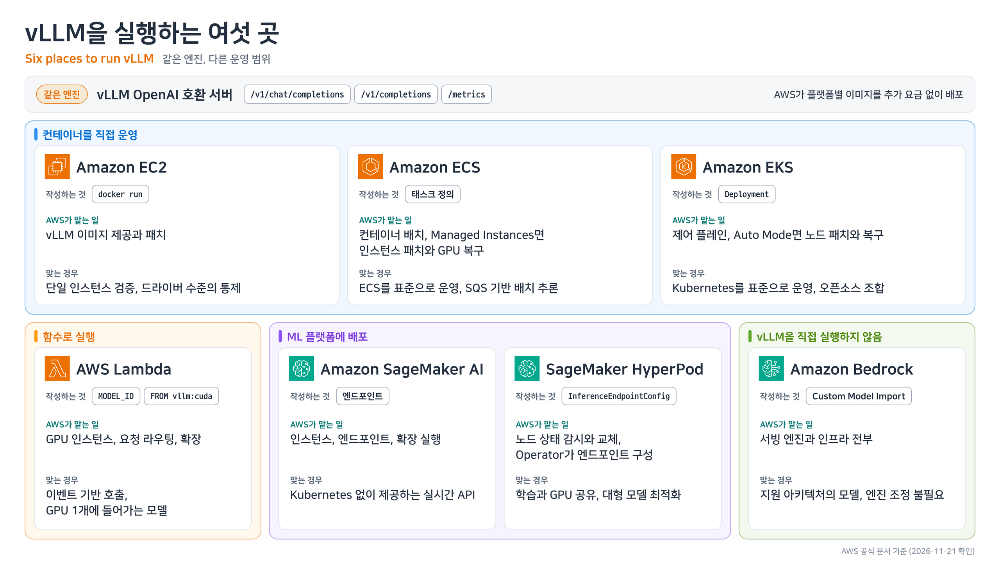
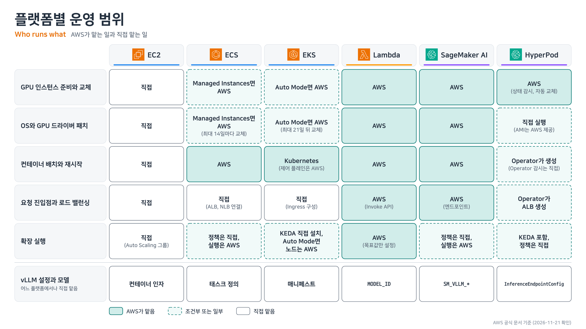
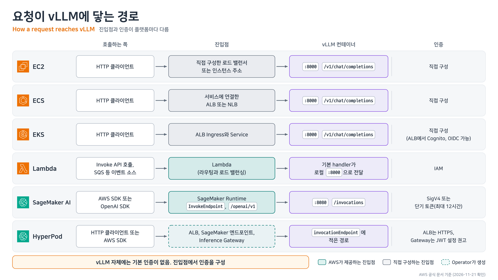
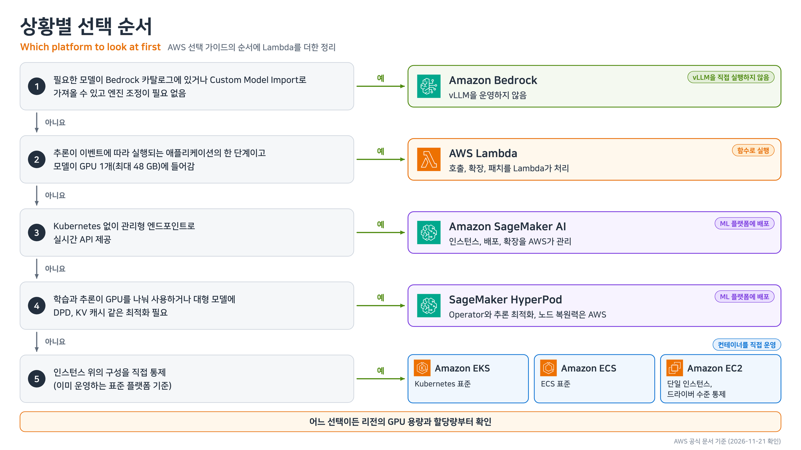
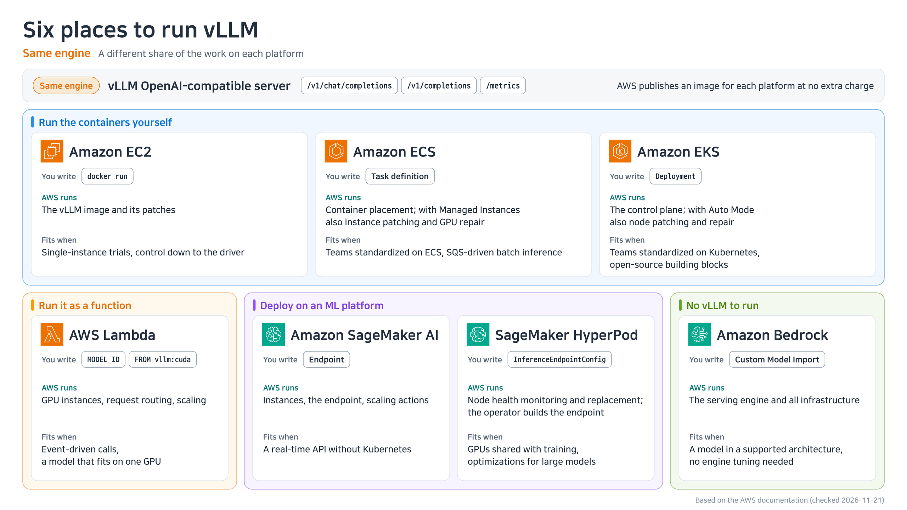
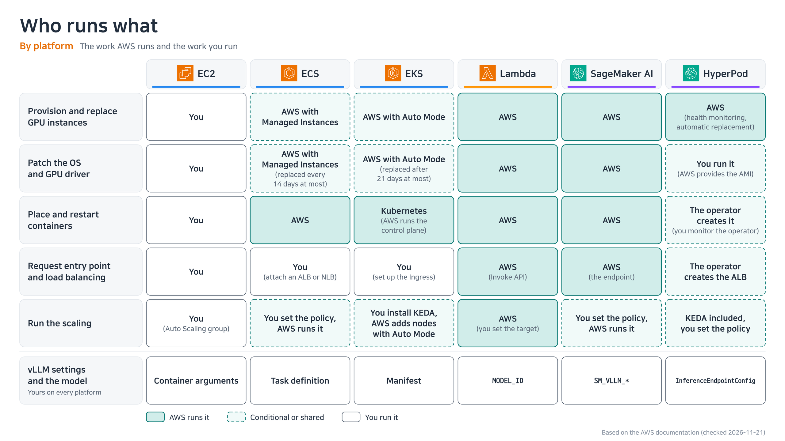
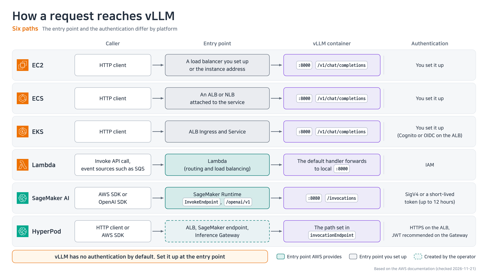
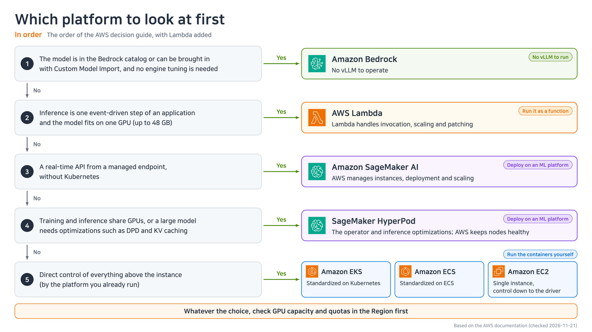

AWS에서 vLLM을 실행하는 플랫폼은 EC2, ECS, EKS, SageMaker AI, SageMaker HyperPod에 2026년 11월의 Lambda GPU 함수가 더해져 여섯 가지가 됐습니다. 여섯 곳은 같은 vLLM 엔진과 같은 OpenAI 호환 API를 사용합니다. 다른 점은 누가 GPU 노드와 엔드포인트를 운영하는가, 요청이 어떻게 들어오는가, 어떻게 확장되는가, 무엇에 과금되는가 네 가지입니다. 이 글은 AWS 공식 문서를 기준으로 여섯 플랫폼을 이 네 가지 기준으로 비교합니다. 선택할 때는 필요한 통제 수준을 충족하는 선택지 가운데 AWS가 가장 많이 운영해 주는 것부터 검토합니다.With the Lambda GPU functions of November 2026 added to EC2, ECS, EKS, SageMaker AI and SageMaker HyperPod, there are now six AWS platforms that run vLLM. All six run the same vLLM engine behind the same OpenAI-compatible API. They differ on four points: who operates the GPU nodes and the endpoint, how requests arrive, how capacity scales, and what is billed. This post compares the six on those four criteria, based on the AWS documentation. The order of choice is to start with the option where AWS operates the most among those that give you the control you need.
오픈 웨이트 모델(가중치가 공개되어 직접 서빙하는 모델)을 vLLM으로 서빙하기로 정한 팀이 AWS 문서를 찾으면 가이드가 여섯 갈래로 나옵니다. Amazon EC2, Amazon ECS, Amazon EKS에는 컨테이너 가이드가 있습니다. Amazon SageMaker AI에는 엔드포인트가, SageMaker HyperPod에는 Inference Operator가 있습니다. 2026년 11월 18일에는 AWS Lambda가 Lambda Managed Instances에서 GPU 함수를 지원하면서 vLLM 이미지를 함께 내놓았습니다.
문서마다 이미지 이름, 포트, 호출 방법이 달라서 서로 다른 제품 여섯 개를 비교해야 하는 것처럼 보입니다. 실제로는 여섯 곳 모두 같은 vLLM 서버를 실행하고 같은 OpenAI 호환 API로 응답합니다. 달라지는 것은 그 컨테이너 주변의 일을 누가 맡는가입니다.

표 1에 여섯 플랫폼과, vLLM을 직접 실행하지 않는 선택지인 Amazon Bedrock을 한 줄씩 정리했습니다.
| 플랫폼 | 배포할 때 작성하는 것 | AWS가 맡는 일 | 직접 맡는 일 |
|---|---|---|---|
| Amazon EC2 | docker run 명령 | vLLM 이미지 제공과 패치 | 인스턴스, 드라이버, 로드 밸런서, 확장, 감시 전부 |
| Amazon ECS | 태스크 정의와 서비스 | 컨테이너 배치. Managed Instances를 사용하면 인스턴스 준비, 패치, GPU 장애 복구까지 | 로드 밸런서 연결, 확장 정책, 인증 |
| Amazon EKS | Deployment와 Service 매니페스트 | Kubernetes 제어 플레인. Auto Mode를 사용하면 노드 준비, 패치, 복구까지 | Ingress, KEDA, 관측 도구의 설치와 운영, 인증 |
| AWS Lambda | Dockerfile의 FROM 한 줄과 환경 변수 MODEL_ID | GPU 인스턴스 수명 주기, 드라이버 패치, 요청 라우팅과 로드 밸런싱, 확장 | 모델 위치와 vLLM 인자, 실행 환경 수의 최솟값과 최댓값 |
| Amazon SageMaker AI | 모델, 엔드포인트 구성, 엔드포인트 | 인스턴스 준비와 패치, 엔드포인트, 상태 확인과 교체, 확장 실행 | 컨테이너와 vLLM 설정, 인스턴스 유형, 확장 정책 |
| SageMaker HyperPod | InferenceEndpointConfig 리소스 | 노드 상태 감시와 자동 교체. Operator가 Deployment, 로드 밸런서, 인증서를 생성 | 오케스트레이션 운영, 노드 패치 실행, add-on 업그레이드 |
| Amazon Bedrock | 모델 가중치 가져오기 또는 카탈로그 모델 호출 | 서빙 엔진과 인프라 전부 | 요청 파라미터 |
표 1. vLLM을 실행하는 여섯 플랫폼과 Amazon Bedrock. 2026년 11월 21일 AWS 공식 문서 기준
식당 주방에 비유하면 차이가 쉽게 보입니다. vLLM은 요리사, GPU는 화구, 요청은 주문입니다. EC2는 빈 점포를 빌려 화구 설치부터 주문 창구까지 직접 차리는 방식입니다. ECS는 요리사를 어느 자리에 몇 명 둘지만 적어 내면 운영 대행이 배치해 주는 주방이고 EKS는 표준 설계도로 주방 단지를 직접 설계해 원하는 설비를 들이는 방식입니다.
Lambda는 주문이 들어오면 일하는 출장 주방입니다. 주문 전달과 화구 관리를 업체가 맡는 대신 화구 하나에 올릴 수 있는 요리만 받습니다. SageMaker AI는 주문 창구와 화구 관리를 호텔에 맡긴 위탁 주방입니다. HyperPod는 메뉴 개발실과 조리 라인이 화구를 나눠 사용하는 중앙 주방이며 고장 난 화구는 운영사가 교체합니다. Bedrock은 요리사를 고용하지 않고 조리법만 식당에 맡기는 선택입니다.
비유와 다른 점도 있습니다. 출장 주방에 해당하는 Lambda도 고객 계정의 EC2 인스턴스에서 실행됩니다. 실행 환경의 최솟값을 1 이상으로 두면 주문이 없는 시간에도 인스턴스 요금이 과금됩니다.
01
vLLM은 LLM 추론과 서빙을 위한 오픈소스 라이브러리입니다. UC Berkeley의 Sky Computing Lab에서 시작했고 지금은 여러 대학과 기업이 참여하는 커뮤니티가 유지합니다. vLLM 문서가 드는 주요 기능 가운데 서빙 성능과 관련된 것은 네 가지입니다. 어텐션 메모리를 관리하는 PagedAttention, 요청을 계속 묶어 처리하는 연속 배칭(continuous batching), Prefix 캐싱, 여러 LoRA 어댑터의 동시 서빙입니다.
플랫폼 선택에서 중요한 특징은 서버가 OpenAI 호환 API를 제공한다는 점입니다. /v1/chat/completions, /v1/completions, /v1/embeddings 같은 경로를 그대로 제공하므로 OpenAI SDK로 작성한 클라이언트는 주소만 바꿔 호출합니다. 상태 확인용 /health와 Prometheus 형식의 /metrics도 같은 서버가 제공합니다.
AWS는 vLLM을 넣은 Deep Learning Containers(DLC) 이미지를 추가 요금 없이 배포합니다. DLC 문서에 따르면 이미지는 Amazon Linux 2023 기반이고 vLLM의 main 브랜치를 따라가며 회귀 테스트를 통과한 뒤 게시됩니다. 가장 단순한 실행 형태는 GPU 인스턴스에서 컨테이너 하나를 실행하는 명령입니다.
docker run --gpus all -p 8000:8000 \
public.ecr.aws/deep-learning-containers/vllm:server-cuda \
--model openai/gpt-oss-20b \
--host 0.0.0.0 --port 8000나머지 다섯 플랫폼은 이 명령을 각자의 배포 단위로 감싸 실행합니다. 엔진은 같고 플랫폼의 호출 규약에 맞춘 이미지가 따로 있습니다.
| 플랫폼 | 이미지 | 요청을 받는 방식 | 모델과 vLLM 인자를 지정하는 곳 |
|---|---|---|---|
| EC2, ECS, EKS | vllm:server-cuda | 포트 8000, OpenAI 호환 경로 그대로 | 컨테이너 인자(--model과 vllm serve의 플래그) |
| SageMaker AI | vllm:server-sagemaker-cuda | 포트 8080, /ping과 /invocations | 환경 변수 SM_VLLM_* |
| Lambda | lambda/deep-learning-containers/vllm:cuda | 포트를 외부에 열지 않음. 기본 handler가 이벤트를 로컬 vLLM 서버로 전달 | 환경 변수 MODEL_ID, VLLM_SERVER_ARGS |
| HyperPod | 문서 예제는 vLLM 공식 이미지 vllm/vllm-openai, DPD 구성은 vllm:server-hyperpod-cuda | invocationEndpoint에 적은 경로(예: v1/chat/completions) | InferenceEndpointConfig의 모델 소스와 컨테이너 설정 |
표 2. 플랫폼별 vLLM 이미지와 요청을 받는 방식. DLC 이미지는 public.ecr.aws/deep-learning-containers/ 아래에, Lambda용 이미지는 public.ecr.aws/lambda/ 아래에 있음. 2026년 11월 21일 기준
문서마다 예제의 버전이 다르다는 점은 주의가 필요합니다. 2026년 11월 21일 기준 DLC Changelog의 최신 릴리스는 11월 8일의 server-cuda-v2.8(vLLM 0.33.0)입니다. EKS 사용자 가이드의 예제는 Ubuntu 기반의 0.21.0 태그를, HyperPod 문서의 예제는 0.19 계열을 사용합니다.
DLC 지원 정책은 vLLM 이미지의 최신 릴리스만 지원하고 Ubuntu 기반 이미지는 보안 패치를 보장하지 않는다고 밝힙니다. 예제의 태그를 그대로 복사하지 말고 Amazon Linux 2023 기반의 최신 태그를 확인하는 것을 권고합니다.
02
여섯 플랫폼의 차이는 네 가지 질문으로 정리됩니다. 뒤의 챕터는 모든 플랫폼을 이 순서로 설명합니다.
GPU 추론 서버의 운영은 여섯 가지 일로 나뉩니다. GPU 인스턴스 준비와 교체, OS와 GPU 드라이버 패치, 컨테이너 배치와 재시작, 요청 진입점과 로드 밸런싱, 확장 실행, vLLM 설정입니다. 플랫폼마다 이 가운데 AWS가 맡는 범위가 다르고 vLLM 설정과 모델 선택은 어느 플랫폼에서나 직접 맡습니다.

AWS 선택 가이드는 이 차이를 한 문장씩으로 요약합니다. SageMaker AI는 AWS가 인스턴스와 배포를 관리하고 고객이 모델 스택을 관리합니다. HyperPod는 AWS가 클러스터 복원력을 맡고 고객이 오케스트레이션을 관리합니다. EC2, EKS, ECS에서 직접 운영하면 인스턴스 위의 모든 것을 고객이 관리합니다.
vLLM 자체는 포트 하나에서 HTTP 요청을 받고 기본 인증이 없습니다. 그래서 진입점을 누가 만들고 어떤 방식으로 인증하는가가 플랫폼마다 달라집니다. EC2, ECS, EKS에서는 로드 밸런서와 인증을 직접 구성합니다. Lambda와 SageMaker AI는 AWS API가 진입점이고 IAM으로 인증합니다. HyperPod는 Operator가 로드 밸런서를 만듭니다.

GPU 인스턴스는 요청이 없는 시간에도 과금되므로 트래픽이 없을 때 0까지 줄일 수 있는지가 비용을 좌우합니다. 반대로 0에서 다시 올라올 때는 인스턴스 시작, 이미지 내려받기, 모델 가중치 적재가 차례로 일어납니다. AWS Prescriptive Guidance는 이 과정이 수 분 걸릴 수 있으므로 용량이 소진되기 전에 반응하도록 확장 정책을 설정하라고 안내합니다.
플랫폼마다 확장 신호, 최소 용량의 기본값, 0인 동안 들어온 요청의 처리 방식이 다릅니다.
여섯 플랫폼 모두 토큰이 아니라 GPU 인스턴스가 실행된 시간에 과금됩니다. 차이는 인스턴스 요금 위에 더해지는 항목입니다. EC2는 인스턴스 요금만 냅니다. EKS는 클러스터 요금이 더해지고 ECS Managed Instances와 EKS Auto Mode, Lambda는 관리 요금이 더해집니다. SageMaker AI와 HyperPod는 이름이 ml.로 시작하는 인스턴스의 요금표를 따릅니다.
AWS 선택 가이드는 인스턴스 기반 선택지가 사용 여부와 관계없이 과금되므로 높은 사용률이 유지되거나 기존 약정을 적용할 때 비용 효율이 높아진다고 설명합니다.
03
AWS 문서는 세 플랫폼을 직접 운영(self-managed)으로 묶습니다. 같은 vllm:server-cuda 이미지를 사용하고 인스턴스 위의 구성을 고객이 책임집니다. 세 곳의 차이는 컨테이너 배치를 누가 하는가입니다. EC2에서는 팀이 인스턴스를 직접 다루고 ECS에서는 AWS가 오케스트레이션 계층을 관리하며 EKS에서는 Kubernetes가 오케스트레이션을 맡습니다.
EC2는 앞에서 본 docker run 명령을 GPU 인스턴스에서 그대로 실행하는 방식입니다. AWS Deep Learning AMI를 사용하면 NVIDIA 드라이버와 컨테이너 툴킷이 설치된 상태에서 시작합니다.
--tensor-parallel-size로 한 인스턴스의 여러 GPU에 나눠 올립니다.모델 하나를 인스턴스 한두 대에서 검증하는 단계나 드라이버와 커널 수준까지 직접 통제해야 하는 경우에 맞습니다. 인스턴스 수가 늘면 배치, 교체, 확장을 직접 구성해야 하는 부담이 커집니다.
ECS는 태스크 정의에 이미지와 GPU 수를 적으면 ECS가 컨테이너를 인스턴스에 배치합니다. GPU는 컨테이너 정의의 resourceRequirements로 요청합니다. GPU를 사용하는 방법은 두 가지입니다. 직접 관리하는 EC2 인스턴스를 사용하는 ECS on EC2와 AWS가 인스턴스를 관리하는 ECS Managed Instances입니다. AWS Fargate는 GPU를 지원하지 않습니다.
필자가 2026년 11월 21일에 확인한 범위에서는 ECS 전용 vLLM 이미지나 단계별 공식 가이드를 찾지 못했습니다. EC2용 DLC 이미지를 태스크 정의에 그대로 사용합니다. 가장 가까운 공식 참고 구현은 AWS Containers 블로그의 GPU 배치 추론 예제입니다.
이미 ECS로 서비스를 운영하는 팀이 Kubernetes 없이 GPU 추론을 더하려는 경우나 SQS로 작업을 받아 처리하는 배치 추론에 맞습니다. ECS가 제공하는 것은 범용 컨테이너 기능입니다. KV 캐시 상태를 보는 라우팅 같은 추론 전용 기능은 필자가 확인한 ECS 문서에 없었습니다.
EKS에서는 vLLM을 일반 Deployment와 Service로 배포합니다. vLLM 전용 Operator나 add-on은 없고 EKS 사용자 가이드의 추론 챕터가 기준 구성을 제시합니다. vLLM DLC, Amazon S3의 가중치를 GPU 메모리로 바로 올리는 Run:ai Model Streamer, ALB Ingress, KEDA를 조합한 구성입니다. 같은 절차가 EKS Auto Mode와 직접 운영하는 Karpenter 양쪽에서 동작합니다.
vllm:num_requests_waiting)와 p95 지연 시간을 기준으로 Pod를 늘리고 Karpenter가 노드를 추가합니다. 가이드의 예시(g6e.4xlarge)는 노드 준비 30초, 8.8 GB 이미지 받기 약 48초, 10.4 GB 가중치 적재 약 5초였고 문서는 2분 안에 서빙을 시작할 수 있다고 설명합니다.Kubernetes를 표준 플랫폼으로 운영하는 조직이나 여러 모델과 오픈소스 도구(llm-d, LeaderWorkerSet, GPU 분할)를 직접 조합하려는 경우에 맞습니다. AWS 선택 가이드도 Kubernetes 같은 특정 플랫폼으로 표준화한 경우를 직접 운영을 고르는 이유로 듭니다. 대신 Ingress, 자동 확장, 관측, 인증을 조립하고 버전을 맞추는 일이 고객의 몫입니다.
04
Lambda는 2026년 11월 18일부터 Lambda Managed Instances에서 GPU 함수를 정식으로 지원합니다. Lambda Managed Instances는 Lambda가 고객 계정의 EC2 인스턴스를 관리하면서 그 위에서 함수를 실행하는 방식입니다. 인스턴스 유형과 확장 범위는 용량 공급자(capacity provider)에 정의합니다.
vLLM을 실행하는 데 필요한 것은 Dockerfile 한 줄과 환경 변수 하나입니다. Lambda가 제공하는 이미지를 FROM public.ecr.aws/lambda/deep-learning-containers/vllm:cuda로 지정하면 vLLM 서버와 기본 handler가 함께 들어옵니다. 실행 환경(execution environment)이 시작될 때 서버를 한 번 실행하고 함수 호출로 들어온 이벤트를 handler가 로컬 서버로 전달합니다. 모델은 환경 변수로 바꿉니다.
aws lambda update-function-configuration \
--function-name my-gpu-function \
--environment 'Variables={MODEL_ID=Qwen/Qwen2.5-1.5B-Instruct,HF_TOKEN=<your-hugging-face-token>}'이벤트 본문이 곧 OpenAI 형식의 요청입니다. 기본 handler는 요청에 messages가 있으면 /v1/chat/completions로, prompt가 있으면 /v1/completions로 전달합니다. MODEL_ID에는 Hugging Face 모델 ID 외에 S3 경로를 지정할 수 있고 문서는 운영 환경에서 S3를 사용하라고 권고합니다.
제약은 모델 크기에서 먼저 나옵니다. 지원 인스턴스는 EC2 G 시리즈(G4dn, G5, G6, Gr6, G6e, G6f, Gr6f)이고 실행 환경 하나에 GPU가 정확히 1개 할당됩니다. GPU 메모리는 최대 48 GB, 함수 메모리는 최대 32,768 MB, 컨테이너 이미지는 최대 32 GB입니다. 여러 GPU에 나눠 올려야 하는 모델은 대상이 아닙니다.
토큰 스트리밍 응답과 함수 URL을 GPU 함수에서 지원하는지는 필자가 확인한 문서에 나와 있지 않았습니다. 문서의 예제 handler는 응답 전체를 한 번에 반환합니다. 대화형 화면에 토큰을 바로 보여 줘야 한다면 적용 전에 확인이 필요합니다.
Lambda 문서는 대상 워크로드를 두 가지로 설명합니다. GPU 연산이 애플리케이션의 한 단계로 이벤트에 따라 실행되는 경우와 AMI, 드라이버, CUDA 버전을 관리하고 싶지 않은 경우입니다. 언어 모델은 애플리케이션의 일부로 배포하는 중소형 모델을 대상으로 적고 파운데이션 모델은 Amazon Bedrock을 검토하라고 안내합니다. SQS 대기열의 문서를 묶음으로 처리하거나 워크플로의 한 단계로 추론을 호출하는 구성이 여기에 해당합니다.
05
두 플랫폼은 같은 SageMaker 계열이지만 운영 방식이 다릅니다. SageMaker AI 엔드포인트는 Kubernetes 없이 사용하는 관리형 엔드포인트이고 HyperPod는 Amazon EKS 클러스터 위에서 동작합니다.
SageMaker AI에서는 모델, 엔드포인트 구성, 엔드포인트를 만들면 SageMaker AI가 GPU 인스턴스를 준비하고 컨테이너를 실행합니다. SageMaker용 vLLM 이미지는 포트 8080에서 /ping과 /invocations를 제공하고 vLLM 인자는 이름이 SM_VLLM_으로 시작하는 환경 변수로 전달합니다. 예를 들어 SM_VLLM_MAX_MODEL_LEN=4096은 --max-model-len 4096이 됩니다.
2026년 5월 21일부터는 엔드포인트가 OpenAI 호환 경로를 제공합니다. OpenAI SDK의 기본 주소를 엔드포인트 주소로 바꾸고 AWS 자격 증명으로 만든 단기 토큰(최대 12시간)을 API 키 자리에 넣습니다. 문서가 설명하는 경로는 Chat Completions입니다.
from openai import OpenAI
from sagemaker.core.token_generator import generate_token
REGION = "us-west-2"
sme_base_url = (
f"https://runtime.sagemaker.{REGION}.amazonaws.com"
f"/endpoints/{SME_ENDPOINT_NAME}/openai/v1"
)
client = OpenAI(
base_url=sme_base_url,
api_key=generate_token(region=REGION),
)InvokeEndpoint와 응답 스트리밍용 InvokeEndpointWithResponseStream을 SigV4 서명으로 호출하거나 OpenAI 호환 경로를 단기 토큰으로 호출합니다. 엔드포인트는 계정 범위이고 외부에 공개되지 않습니다. 일반 응답은 60초, 스트리밍 응답은 8분 안에 끝나야 합니다.ConcurrentRequestsPerModel) 같은 지표로 인스턴스 수를 조정합니다. 0까지 줄이는 기능은 추론 구성 요소(inference component)를 사용하는 엔드포인트에서만 지원하고 0에서 올라오는 수 분 동안 호출은 오류를 반환합니다. 라우팅 전략은 네 가지이며 2026년 11월에 추가된 KV_AWARE는 vLLM의 KV 캐시 상태를 보고 요청을 보낼 인스턴스를 고릅니다.ml. 인스턴스의 사용 시간, 스토리지, 처리한 데이터 양에 과금됩니다. 엔드포인트는 서비스 중이면 트래픽이 없어도 과금됩니다. SageMaker Savings Plans가 실시간 추론에 적용됩니다.AWS 선택 가이드는 SageMaker AI 엔드포인트가 맞는 경우를 이렇게 설명합니다. 표준 형식의 오픈 웨이트 모델이나 커스텀 모델을 서빙 스택을 통제하면서 호스팅하되 인스턴스, 배포, 자동 확장, 모니터링은 AWS에 맡기는 경우입니다. Kubernetes 운영 인력 없이 vLLM 설정을 직접 조정하려는 팀에 맞습니다.
확인할 점은 두 가지입니다. DLC 문서에 따르면 엔드포인트를 만들 때는 공개 갤러리의 이미지가 아니라 리전별 비공개 ECR 경로의 이미지를 사용합니다. AWS 블로그는 인스턴스 하나에 들어가지 않는 크기의 모델을 HyperPod로 옮기는 사례를 소개합니다.
HyperPod는 Amazon EKS가 오케스트레이션하는 GPU 클러스터이고 추론 기능은 EKS add-on으로 설치하는 HyperPod Inference Operator가 제공합니다. InferenceEndpointConfig 리소스 하나에 모델 위치, 인스턴스 유형, 호출 경로를 적습니다. 그러면 Operator가 Deployment, Service, Application Load Balancer, KEDA 자동 확장, 인증서, SageMaker 엔드포인트 등록까지 만듭니다. EKS에서 직접 조립하던 부분을 Operator가 대신하는 구조입니다.
update-cluster-software)은 고객이 맡습니다. 관측 구성(Amazon Managed Service for Prometheus와 Amazon Managed Grafana 대시보드)은 한 번의 설정으로 제공됩니다.model 값을 보고 모델별 Pod로 요청을 보냅니다. Gateway는 기본 상태에서 요청을 인증하지 않으므로 문서는 JWT 인증 설정을 강하게 권고합니다.ml. 인스턴스 요금을 내고 연결된 EKS 제어 플레인, Amazon FSx for Lustre, Amazon S3 요금은 별도입니다. 요금 페이지가 나열하는 SageMaker Savings Plans의 적용 대상에는 HyperPod가 없으므로 약정이 적용되는 범위를 먼저 확인하는 것을 권고합니다.HyperPod가 다른 다섯 곳과 구별되는 부분은 추론 최적화 기능입니다. 세 가지 기능을 InferenceEndpointConfig의 필드로 활성화합니다. 첫째는 Prefix와 KV 캐시 상태를 보는 지능형 라우팅이고 둘째는 CPU 메모리와 외부 저장소를 사용하는 2단계 KV 캐시입니다. 셋째는 Prefill과 Decode를 서로 다른 GPU 풀에 나누는 DPD(Disaggregated Prefill and Decode)입니다. KV 캐시와 지능형 라우팅은 vLLM 컨테이너에서만 동작합니다. DPD는 EFA를 지원하는 P 계열 48xlarge 인스턴스가 필요하고 문서는 70B 이상 모델과 4,000 토큰 이상의 긴 입력에서 효과가 있다고 설명합니다.
AWS 선택 가이드는 HyperPod가 맞는 경우로 세 가지를 듭니다. 대규모 학습, 학습과 추론이 가속기 풀 하나를 공유하는 경우, 고급 추론 최적화가 필요한 경우입니다. Kubernetes 도구를 그대로 사용하면서 노드 복원력은 AWS에 맡기려는 조직에 맞습니다. Kubernetes 운영 역량이 필요하다는 점은 EKS와 같습니다.
06
AWS 선택 가이드는 추론 워크로드를 Amazon Bedrock에서 시작하라고 안내합니다. 필요한 오픈 웨이트 모델이 Bedrock 카탈로그에 서버리스로 제공되면 vLLM을 운영할 이유가 없습니다. Qwen3와 gpt-oss 같은 모델이 이 방식으로 제공됩니다.
직접 미세 조정한 모델은 Custom Model Import로 가져옵니다. Hugging Face 형식의 safetensors 가중치를 S3에 두고 가져오기 작업을 실행하면 AWS가 GPU 준비, 추론 서버 구성, 확장을 맡습니다. 호출은 InvokeModel에 OpenAI 형식의 요청 본문을 실어 보냅니다. 5분 동안 호출이 없으면 0으로 줄어들고 모델 사본이 활성인 시간을 5분 단위로 과금합니다.
제약도 분명합니다. 가져올 수 있는 아키텍처가 Llama, Mistral, Mixtral, Qwen, GPT-OSS 등으로 정해져 있고 텍스트 모델의 가중치는 200 GB 미만이어야 합니다. 서빙 엔진의 설정을 고객이 바꾸는 방법은 문서에 없습니다. 지원 리전은 us-east-1, us-east-2, us-west-2, eu-central-1이고 서울 리전은 포함되지 않습니다.
이 제약에 해당하거나 엔진을 직접 조정해야 할 때 앞의 여섯 플랫폼이 선택지가 됩니다.
07
AWS 선택 가이드의 원칙은 두 문장입니다. 워크로드에 필요한 기능을 지원하는 선택지 가운데 가장 많이 관리되는 것을 사용합니다. 구체적인 요구가 생길 때만 통제 범위가 넓은 쪽으로 옮깁니다. 가이드가 제시하는 순서는 Amazon Bedrock, SageMaker AI 엔드포인트, SageMaker HyperPod, 직접 운영(EC2, EKS, ECS)입니다.
이 가이드의 마지막 갱신일은 2026년 11월 14일이고 나흘 뒤에 출시된 Lambda GPU 함수는 호스팅 선택지로 들어 있지 않습니다. 그림 4는 가이드의 순서에 Lambda 문서가 밝힌 대상 워크로드를 더해 필자가 정리한 흐름입니다.

| 상황 | 먼저 검토할 플랫폼 | 근거 | 선택 전에 확인할 것 |
|---|---|---|---|
| 필요한 모델이 Bedrock 카탈로그에 있거나 Custom Model Import의 지원 아키텍처에 해당 | Amazon Bedrock | 운영할 서버가 없고 호출이 없으면 0으로 줄어듦 | 지원 리전(Custom Model Import는 서울 미지원), 엔진 조정이 필요한지 |
| SQS 대기열이나 파일 업로드 같은 이벤트에 따라 중소형 모델을 호출 | AWS Lambda | 호출, 확장, 패치를 Lambda가 처리하고 이벤트 소스와 바로 연결 | 모델이 GPU 1개(최대 48 GB)에 들어가는지, 0에서 올라올 때의 429 처리, 스트리밍 필요 여부 |
| Kubernetes 없이 vLLM 설정을 조정하면서 실시간 API를 제공 | Amazon SageMaker AI | 인스턴스, 배포, 확장을 AWS가 관리하고 OpenAI 호환 경로를 제공 | 응답 제한(일반 60초, 스트리밍 8분), 최소 인스턴스 수와 유휴 비용 |
| 학습과 추론이 GPU를 나눠 사용하거나 대형 모델에 DPD와 KV 캐시가 필요 | SageMaker HyperPod | Operator가 엔드포인트를 구성하고 추론 최적화 기능을 제공 | Kubernetes 운영 인력, 약정이 적용되는 범위 |
| Kubernetes를 표준으로 운영하고 구성 요소를 직접 고름 | Amazon EKS | 사용자 가이드의 기준 구성과 오픈소스 조합, 2분 이내 시작 예시 | KEDA, Ingress, 관측 도구를 운영할 주체 |
| 이미 ECS로 서비스를 운영하거나 SQS 기반 배치 추론을 구성 | Amazon ECS | Managed Instances의 패치와 GPU 장애 복구, 0까지 축소 | 단계별 공식 vLLM 가이드가 없으므로 구성 검증 |
| 단일 인스턴스에서 검증하거나 드라이버 수준까지 통제 | Amazon EC2 | 관리 요금이 없고 구성 제약이 없음 | 교체, 확장, 감시를 직접 구성하는 부담 |
표 3. 상황별로 먼저 검토할 플랫폼. AWS 선택 가이드의 순서에 Lambda를 더한 필자의 정리이며 2026년 11월 21일 문서 기준
가이드는 용량이 이 모든 판단보다 우선할 수 있다고 덧붙입니다. 특정 가속기 인스턴스 유형이 리전에서 부족하면 SageMaker AI 엔드포인트, HyperPod, 직접 운영하는 인스턴스가 모두 영향을 받습니다. 검토하는 선택지 전부에서 용량을 확인하라는 내용입니다.
08
문서에 나온 시작 시간 수치를 한곳에 모으면 표 4와 같습니다. 모델 크기, 이미지 크기, 적재 방식이 서로 다른 예시이므로 플랫폼의 순위로 읽으면 안 됩니다.
| 플랫폼 | 문서의 수치 | 조건 | 0인 동안 들어온 요청 |
|---|---|---|---|
| ECS Managed Instances | 첫 결과까지 약 13분 | 가중치를 넣은 약 14 GB 이미지, SQS 기반 배치 예제 | SQS 대기열에서 대기 |
| EKS | 2분 이내 | g6e.4xlarge, SOCI 이미지 8.8 GB, S3에서 가중치 10.4 GB 스트리밍 | 가이드 예제는 Pod 1개를 항상 유지 |
| Lambda | 약 10분 | Hugging Face 모델 ID에서 호출 가능한 엔드포인트까지, 첫 배포 예시 | HTTP 429로 거절 |
| SageMaker AI | 525초에서 258초로 단축 | Qwen3-8B, ml.g6.2xlarge, LMI 컨테이너, 컨테이너 캐싱 적용 전과 후 | 오류 반환 |
| HyperPod | 확장 시간 약 60% 단축 | 57 GB에서 145 GB 크기 모델, 노드 NVMe 캐시 적용 | 확인한 문서에 설명 없음 |
표 4. AWS 문서와 블로그에 나온 시작 시간 수치. 조건이 서로 달라 플랫폼 사이의 비교 수치가 아님
공통점은 0에서 올라오는 데 분 단위가 걸린다는 것입니다. 지연에 민감한 서비스는 최소 용량을 1 이상으로 두는 것을 권고합니다. 0까지 줄이는 설정은 개발 환경이나 배치 작업처럼 지연을 허용하는 워크로드에 적용합니다. Lambda 문서와 ECS 블로그도 같은 기준을 제시합니다.
시작 시간을 줄이는 방법은 플랫폼이 달라도 비슷합니다. EKS 가이드와 Lambda 문서는 가중치를 이미지에 넣지 않고 S3에 두고 Run:ai Model Streamer로 GPU 메모리에 바로 올리는 방법을 권고합니다. 이미지는 SOCI 지연 로딩으로 받는 시간을 줄입니다.
EC2의 G 계열 On-Demand 인스턴스 할당량은 기본값이 0 vCPU입니다. Lambda 문서는 GPU 함수를 배포하기 전에 이 할당량의 증가를 요청해야 한다고 밝힙니다. ECS Managed Instances도 계정의 EC2 On-Demand 할당량을 따릅니다. 할당량이 있어도 원하는 인스턴스 유형의 용량이 리전에 부족할 수 있습니다. 여러 인스턴스 유형을 후보로 지정하는 기능(SageMaker AI의 인스턴스 풀, HyperPod의 인스턴스 유형 우선순위)을 함께 검토합니다.
| 대상 | 서울 리전(ap-northeast-2) | 근거 |
|---|---|---|
| EC2 GPU 인스턴스 | G4dn, G5, G6, G6e, G6f, Gr6, Gr6f, G7e, P4d, P5, P5en, P6-B300 계열 제공 | EC2 리전별 인스턴스 유형 문서 |
| ECS Managed Instances | 제공 | 모든 상용 리전 제공(2025년 10월 27일 공지) |
| EKS Auto Mode | 제공 | AWS 리전별 제공 정보 조회 |
| Lambda GPU 함수 | 제공 조건 충족. 용량 공급자 API와 G 시리즈가 서울에 있음. GPU 함수 문서에 서울이 직접 적혀 있지는 않음 | Lambda Managed Instances와 G 시리즈가 있는 모든 상용 리전에서 제공한다는 공지, AWS 리전별 제공 정보 조회 |
| SageMaker AI의 OpenAI 호환 경로 | 제공 | 2026년 5월 21일 공지의 리전 목록 |
| HyperPod와 Inference Operator | 제공. NVIDIA Dynamo 런타임과 Global Inference Gateway의 지원 리전 목록에는 서울이 없음 | HyperPod 문서의 리전 목록과 릴리스 노트 |
| Bedrock Custom Model Import | 미지원 | Bedrock 사용자 가이드의 지원 리전 목록 |
표 5. 서울 리전 제공 여부. 2026년 11월 21일 기준이며 인스턴스 유형별 용량과 요금은 따로 확인이 필요
09
플랫폼을 처음부터 정확히 고르지 못해도 옮길 때 다시 만들어야 하는 것은 많지 않습니다. 여섯 곳이 같은 엔진을 사용하기 때문입니다.
| 항목 | 그대로인 것 | 플랫폼마다 바뀌는 것 |
|---|---|---|
| 모델 | S3에 둔 Hugging Face 형식의 safetensors 가중치 | 가중치를 지정하는 이름(--model, MODEL_ID, SM_VLLM_MODEL, modelSourceConfig) |
| 서버 설정 | vLLM 플래그의 의미(--max-model-len, --tensor-parallel-size) | 전달 방법(컨테이너 인자, VLLM_SERVER_ARGS, SM_VLLM_*) |
| 클라이언트 | OpenAI 형식의 요청과 응답 | 주소와 인증(로드 밸런서 주소, Lambda Invoke API, SageMaker 토큰), 응답 제한 시간 |
| 확장 | vLLM 지표 이름(vllm:num_requests_waiting 등) | 확장 정책을 적는 곳, 0인 동안 들어온 요청의 처리 |
| 이미지 | vLLM 엔진 | 이미지 종류(server-cuda, server-sagemaker-cuda, Lambda용 vllm:cuda) |
표 6. 플랫폼을 옮길 때 그대로인 것과 바뀌는 것
처음 구성할 때 세 가지를 지키면 옮기는 비용이 낮아집니다. 가중치는 이미지에 넣지 않고 S3에 둡니다. 클라이언트는 OpenAI 형식으로 작성하고 주소와 인증만 설정으로 분리합니다. vLLM 플래그는 한곳에 모아 관리합니다.
선택은 그림 4의 순서로 진행하는 것을 권고합니다. Bedrock으로 충분한지 먼저 확인하고 직접 서빙해야 하면 AWS가 가장 많이 운영해 주는 플랫폼부터 검토합니다. 통제가 더 필요해지는 시점에 옮겨도 모델, 서버 설정, 클라이언트 코드는 대부분 그대로 사용합니다.
A team that has decided to serve an open-weight model (a model whose weights are public, so you serve it yourself) with vLLM finds six lines of guidance in the AWS documentation. Amazon EC2, Amazon ECS and Amazon EKS each have container guidance. Amazon SageMaker AI has endpoints, and SageMaker HyperPod has the Inference Operator. On November 18, 2026, AWS Lambda added GPU functions on Lambda Managed Instances and shipped a vLLM image with them.
Each document uses a different image name, port and way of calling, so it looks like six different products to compare. In fact all six run the same vLLM server and answer through the same OpenAI-compatible API. What changes is who takes care of the work around that container.

Table 1 gives one line for each of the six platforms and for Amazon Bedrock, the option where you do not run vLLM yourself.
| Platform | What you write to deploy | What AWS runs | What you run |
|---|---|---|---|
| Amazon EC2 | A docker run command | The vLLM image and its patches | Instances, drivers, the load balancer, scaling and monitoring: everything |
| Amazon ECS | A task definition and a service | Container placement. With Managed Instances, also instance provisioning, patching and recovery from GPU failures | Attaching a load balancer, scaling policies, authentication |
| Amazon EKS | Deployment and Service manifests | The Kubernetes control plane. With Auto Mode, also node provisioning, patching and repair | Installing and operating Ingress, KEDA and observability tools, authentication |
| AWS Lambda | One FROM line in a Dockerfile and the MODEL_ID environment variable | The GPU instance lifecycle, driver patching, request routing and load balancing, scaling | The model location and vLLM arguments, the minimum and maximum number of execution environments |
| Amazon SageMaker AI | A model, an endpoint configuration and an endpoint | Instance provisioning and patching, the endpoint, health checks and replacement, the scaling actions | The container and vLLM settings, the instance type, the scaling policy |
| SageMaker HyperPod | An InferenceEndpointConfig resource | Node health monitoring and automatic replacement. The operator creates the Deployment, the load balancer and the certificate | Operating the orchestration, running node patches, upgrading the add-on |
| Amazon Bedrock | An import of model weights, or a call to a catalog model | The serving engine and all infrastructure | Request parameters |
Table 1. The six platforms that run vLLM, and Amazon Bedrock. Based on the AWS documentation as of November 21, 2026
A restaurant kitchen makes the differences easy to see. vLLM is the chef, a GPU is a burner, and a request is an order. EC2 is renting an empty shop and setting up everything yourself, from installing the burners to the order counter. ECS is a kitchen where you only write down how many chefs go at which station and an operations contractor places them, and EKS is designing a kitchen complex yourself from a standard blueprint and bringing in whatever equipment you want.
Lambda is a catering kitchen that works when an order comes in. The caterer passes the orders and looks after the burners, and in return it only takes dishes that fit on one burner. SageMaker AI is a kitchen run under contract by a hotel that handles the order counter and the burners. HyperPod is a central kitchen where the menu development room and the cooking line share burners, and the operator replaces a broken burner. Bedrock is the choice of not hiring a chef and handing only the recipe to a restaurant.
The analogy does not hold everywhere. Lambda, the catering kitchen, also runs on EC2 instances in your account. If you keep the minimum number of execution environments at 1 or more, the instance is billed even when no order comes in.
01
vLLM is an open-source library for LLM inference and serving. It started at the Sky Computing Lab at UC Berkeley and is now maintained by a community of universities and companies. Four of the key features in the vLLM documentation concern serving performance. They are PagedAttention, which manages the key and value memory of attention, continuous batching of incoming requests, prefix caching, and serving several LoRA adapters at once.
The feature that matters when choosing a platform is that the server provides an OpenAI-compatible API. It serves paths such as /v1/chat/completions, /v1/completions and /v1/embeddings as they are, so a client written with the OpenAI SDK only changes the address it calls. The same server provides /health for health checks and /metrics in Prometheus format.
AWS publishes Deep Learning Containers (DLC) images with vLLM at no extra charge. According to the DLC documentation, the images are built on Amazon Linux 2023, track the main branch of vLLM and are published after passing a regression test suite. The simplest way to run one is a command that starts one container on a GPU instance.
docker run --gpus all -p 8000:8000 \
public.ecr.aws/deep-learning-containers/vllm:server-cuda \
--model openai/gpt-oss-20b \
--host 0.0.0.0 --port 8000The other five platforms wrap this command in their own unit of deployment. The engine is the same and there is a separate image for the calling convention of each platform.
| Platform | Image | How it receives requests | Where you set the model and vLLM arguments |
|---|---|---|---|
| EC2, ECS, EKS | vllm:server-cuda | Port 8000, the OpenAI-compatible paths as they are | Container arguments (--model and the flags of vllm serve) |
| SageMaker AI | vllm:server-sagemaker-cuda | Port 8080, /ping and /invocations | Environment variables SM_VLLM_* |
| Lambda | lambda/deep-learning-containers/vllm:cuda | No port open to the outside. The default handler forwards the event to the local vLLM server | Environment variables MODEL_ID, VLLM_SERVER_ARGS |
| HyperPod | The docs example uses the upstream image vllm/vllm-openai, and the DPD setup uses vllm:server-hyperpod-cuda | The path set in invocationEndpoint (for example v1/chat/completions) | The model source and container settings of InferenceEndpointConfig |
Table 2. The vLLM image of each platform and how it receives requests. DLC images are under public.ecr.aws/deep-learning-containers/ and the Lambda image is under public.ecr.aws/lambda/. As of November 21, 2026
One thing to watch is that the examples in different documents use different versions. As of November 21, 2026, the latest release in the DLC changelog is server-cuda-v2.8 of November 8 (vLLM 0.33.0). The example in the EKS User Guide uses an Ubuntu-based 0.21.0 tag, and the examples in the HyperPod documentation use the 0.19 line.
The DLC support policy says that only the latest release of the vLLM images is supported and that security patching is not guaranteed for the Ubuntu-based images. I recommend not copying the tag from an example and checking the latest Amazon Linux 2023 based tag instead.
02
The differences among the six platforms come down to four questions. The chapters that follow describe every platform in this order.
Operating a GPU inference server breaks down into six kinds of work: provisioning and replacing GPU instances, patching the OS and the GPU driver, placing and restarting containers, the request entry point and load balancing, running the scaling, and the vLLM settings. The share of this work that AWS takes differs by platform, and the vLLM settings and the choice of model are yours on every platform.

The AWS decision guide sums this up in one sentence each. With SageMaker AI, AWS manages the instances and deployment and you manage the model stack. With HyperPod, AWS handles cluster resiliency and you manage orchestration. When you self-manage on EC2, EKS or ECS, you manage everything above the instance.
vLLM itself takes HTTP requests on one port and has no authentication by default. So who builds the entry point and how callers authenticate differ by platform. On EC2, ECS and EKS you set up the load balancer and the authentication. On Lambda and SageMaker AI the entry point is an AWS API and authentication is IAM. On HyperPod the operator creates the load balancer.

A GPU instance is billed while no request arrives, so whether capacity can go down to zero when there is no traffic decides the cost. Coming back from zero, on the other hand, means starting an instance, pulling the image and loading the model weights, one after another. The AWS Prescriptive Guidance says these steps may take several minutes, so scaling policies should react before capacity is exhausted.
The platforms differ in the scaling signal, the default minimum capacity, and what happens to requests that arrive while capacity is zero.
On all six platforms you pay for the time GPU instances run, not for tokens. The difference is what is added on top of the instance price. EC2 charges only the instance price. EKS adds a cluster fee, and ECS Managed Instances, EKS Auto Mode and Lambda add a management fee. SageMaker AI and HyperPod follow the price list of the instances whose names start with ml..
The AWS decision guide explains that instance-based options charge whether or not they are in use, so they become more cost-efficient at sustained, high utilization or when existing commitments apply.
03
The AWS documentation groups these three as self-managed. They use the same vllm:server-cuda image, and you are responsible for everything above the instance. The difference among the three is who places the containers. On EC2 the team handles instances directly, on ECS AWS manages the orchestration layer, and on EKS Kubernetes does the orchestration.
EC2 means running the docker run command shown above on a GPU instance as it is. With the AWS Deep Learning AMI you start with the NVIDIA driver and the container toolkit already installed.
--tensor-parallel-size.It fits the stage of trying one model on one or two instances, and cases that need control down to the driver and the kernel. As the number of instances grows, so does the work of building placement, replacement and scaling yourself.
On ECS you write the image and the number of GPUs in a task definition and ECS places the container on an instance. GPUs are requested with resourceRequirements in the container definition. There are two ways to use GPUs: ECS on EC2, with EC2 instances you manage, and ECS Managed Instances, where AWS manages the instances. AWS Fargate does not support GPUs.
As far as I could check on November 21, 2026, there is no ECS-specific vLLM image and no official step-by-step guide. You use the EC2 DLC image in the task definition as it is. The closest official reference implementation is the GPU batch inference example on the AWS Containers Blog.
It fits a team that already runs services on ECS and wants to add GPU inference without Kubernetes, and batch inference that takes jobs from SQS. What ECS provides is general-purpose container capability. I did not find inference-specific features, such as routing by KV cache state, in the ECS documentation I checked.
On EKS you deploy vLLM as an ordinary Deployment and Service. There is no vLLM-specific operator or add-on, and the inference chapter of the EKS User Guide gives the reference setup. It combines the vLLM DLC, Run:ai Model Streamer, which loads weights from Amazon S3 straight into GPU memory, an ALB Ingress and KEDA. The same steps work with both EKS Auto Mode and self-managed Karpenter.
vllm:num_requests_waiting) and on p95 latency, and Karpenter adds nodes. In the example in the guide (g6e.4xlarge) the node was ready in 30 seconds, the 8.8 GB image was pulled in about 48 seconds and the 10.4 GB of weights loaded in about 5 seconds, and the documentation says Pods can start serving in under two minutes.It fits an organization that runs Kubernetes as its standard platform, or one that wants to combine several models and open-source tools (llm-d, LeaderWorkerSet, GPU partitioning) itself. The AWS decision guide also gives standardizing on a specific platform such as Kubernetes as a reason to self-manage. In return, assembling Ingress, autoscaling, observability and authentication and keeping their versions aligned is your work.
04
Lambda has supported GPU functions on Lambda Managed Instances as a generally available feature since November 18, 2026. With Lambda Managed Instances, Lambda manages EC2 instances in your account and runs functions on them. You define the instance types and the scaling range in a capacity provider.
Running vLLM takes one line in a Dockerfile and one environment variable. Set the image Lambda provides with FROM public.ecr.aws/lambda/deep-learning-containers/vllm:cuda and you get the vLLM server and a default handler together. The server starts once when an execution environment starts, and the handler forwards each event that arrives as a function invocation to the local server. You change the model with an environment variable.
aws lambda update-function-configuration \
--function-name my-gpu-function \
--environment 'Variables={MODEL_ID=Qwen/Qwen2.5-1.5B-Instruct,HF_TOKEN=<your-hugging-face-token>}'The event body is the OpenAI-format request. The default handler forwards a request that contains messages to /v1/chat/completions and one that contains prompt to /v1/completions. MODEL_ID also accepts an S3 path besides a Hugging Face model ID, and the documentation recommends S3 for production.
The first constraint is model size. The supported instances are the EC2 G series (G4dn, G5, G6, Gr6, G6e, G6f, Gr6f) and each execution environment gets exactly one GPU. GPU memory is up to 48 GB, function memory up to 32,768 MB and the container image up to 32 GB. A model that has to be spread over several GPUs is out of scope.
Whether GPU functions support token streaming responses and function URLs is not stated in the documentation I checked. The example handler in the documentation returns the whole response at once. If an interactive screen has to show tokens as they arrive, check this before you adopt it.
The Lambda documentation describes the target workload in two ways: GPU compute that runs as one event-driven step of an application, and cases where you do not want to manage AMIs, drivers or CUDA versions. For language models it names small to mid-size models deployed as part of an application, and it points to Amazon Bedrock for foundation models. Processing documents from an SQS queue in batches, or calling inference as one step of a workflow, are setups of this kind.
05
The two are in the same SageMaker family but operate differently. A SageMaker AI endpoint is a managed endpoint you use without Kubernetes, and HyperPod runs on an Amazon EKS cluster.
On SageMaker AI you create a model, an endpoint configuration and an endpoint, and SageMaker AI provisions the GPU instances and runs the container. The vLLM image for SageMaker serves /ping and /invocations on port 8080, and vLLM arguments are passed as environment variables whose names start with SM_VLLM_. For example, SM_VLLM_MAX_MODEL_LEN=4096 becomes --max-model-len 4096.
Since May 21, 2026, endpoints also expose an OpenAI-compatible path. You change the base URL of the OpenAI SDK to the endpoint address and put a short-lived token made from your AWS credentials (valid up to 12 hours) in place of the API key. The path the documentation describes is Chat Completions.
from openai import OpenAI
from sagemaker.core.token_generator import generate_token
REGION = "us-west-2"
sme_base_url = (
f"https://runtime.sagemaker.{REGION}.amazonaws.com"
f"/endpoints/{SME_ENDPOINT_NAME}/openai/v1"
)
client = OpenAI(
base_url=sme_base_url,
api_key=generate_token(region=REGION),
)InvokeEndpoint, or InvokeEndpointWithResponseStream for response streaming, with a SigV4 signature, or you call the OpenAI-compatible path with the short-lived token. An endpoint is scoped to the account and is not public. A regular response has to finish within 60 seconds and a streaming response within 8 minutes.ConcurrentRequestsPerModel). Scaling to zero is supported only on endpoints that use inference components, and invocations return an error during the several minutes of coming up from zero. There are four routing strategies, and KV_AWARE, added in November 2026, picks the instance for a request by looking at the KV cache state of vLLM.ml. instances, storage and the amount of data processed. An endpoint is billed while in service even with no traffic. SageMaker Savings Plans apply to real-time inference.The AWS decision guide describes when SageMaker AI endpoints fit as follows: hosting open-weight or custom models in standard formats with control over the serving stack, while AWS manages instances, deployment, autoscaling and monitoring. It fits a team that wants to tune vLLM settings itself without people to operate Kubernetes.
There are two things to check. According to the DLC documentation, you create an endpoint with the image at the private ECR path of your Region, not with the image in the public gallery. And an AWS blog describes a case where a model too large for one instance is moved to HyperPod.
HyperPod is a GPU cluster orchestrated by Amazon EKS, and its inference capability comes from the HyperPod Inference Operator, installed as an EKS add-on. You write the model location, the instance type and the invocation path in one InferenceEndpointConfig resource. The operator then creates the Deployment, the Service, the Application Load Balancer, KEDA autoscaling, the certificate and the SageMaker endpoint registration. The operator does the part you would assemble yourself on EKS.
update-cluster-software). Observability (Amazon Managed Service for Prometheus and Amazon Managed Grafana dashboards) is provided with a one-time setup.model value in the request body and sends the request to the Pods of that model. The Gateway does not authenticate requests by default, so the documentation strongly recommends configuring JWT authentication.ml. instance price, with the connected EKS control plane, Amazon FSx for Lustre and Amazon S3 charged separately. HyperPod is not in the list of usage that SageMaker Savings Plans apply to on the pricing page, so I recommend checking first what your commitments cover.What sets HyperPod apart from the other five is its inference optimization features. You turn on three of them through fields of InferenceEndpointConfig. They are intelligent routing that looks at prefix and KV cache state, a two-tier KV cache that uses CPU memory and external storage, and DPD (Disaggregated Prefill and Decode), which puts prefill and decode on separate GPU pools. The KV cache and intelligent routing work only with vLLM containers. DPD needs P-family 48xlarge instances that support EFA, and the documentation says it pays off with models of 70B or more and long inputs of 4,000 tokens or more.
The AWS decision guide names three cases where HyperPod fits: large-scale training, one accelerator pool shared across training and inference, and a need for advanced inference optimizations. It fits an organization that wants to keep using Kubernetes tooling while leaving node resiliency to AWS. Like EKS, it needs the ability to operate Kubernetes.
06
The AWS decision guide says to start inference workloads with Amazon Bedrock. If the open-weight model you need is offered serverlessly in the Bedrock catalog, there is no reason to operate vLLM. Models such as Qwen3 and gpt-oss are offered this way.
A model you fine-tuned yourself comes in through Custom Model Import. You put safetensors weights in Hugging Face format in S3 and run an import job, and AWS takes GPU provisioning, inference server configuration and scaling. You invoke it by sending an OpenAI-format request body with InvokeModel. After 5 minutes without an invocation it scales to zero, and the time a model copy is active is billed in 5-minute windows.
The constraints are clear too. The architectures you can import are fixed, including Llama, Mistral, Mixtral, Qwen and GPT-OSS, and the weights of a text model must be under 200 GB. The documentation gives no way for a customer to change the settings of the serving engine. The supported Regions are us-east-1, us-east-2, us-west-2 and eu-central-1, and the Seoul Region is not among them.
When one of these constraints applies, or you need to tune the engine yourself, the six platforms above become the options.
07
The principle of the AWS decision guide is two sentences. Use the most managed option that supports the capabilities your workload needs. Move toward more control only when a specific requirement calls for it. The order the guide gives is Amazon Bedrock, SageMaker AI endpoints, SageMaker HyperPod, then self-managed infrastructure (EC2, EKS, ECS).
The guide was last updated on November 14, 2026, and Lambda GPU functions, released four days later, are not among its hosting options. Figure 4 is my own arrangement: the order of the guide with the target workload from the Lambda documentation added.

| Situation | Platform to look at first | Why | What to check before choosing |
|---|---|---|---|
| The model you need is in the Bedrock catalog or is one of the architectures Custom Model Import supports | Amazon Bedrock | No server to operate, and it scales to zero when there are no invocations | Supported Regions (Custom Model Import is not in Seoul), whether you need to tune the engine |
| A small or mid-size model is invoked by events such as an SQS queue or a file upload | AWS Lambda | Lambda handles invocation, scaling and patching and connects directly to event sources | Whether the model fits on one GPU (up to 48 GB), handling of 429 while coming up from zero, whether you need streaming |
| A real-time API, tuning vLLM settings, without Kubernetes | Amazon SageMaker AI | AWS manages instances, deployment and scaling and provides an OpenAI-compatible path | Response limits (60 seconds regular, 8 minutes streaming), the minimum instance count and idle cost |
| Training and inference share GPUs, or a large model needs DPD and KV caching | SageMaker HyperPod | The operator builds the endpoint and provides inference optimization features | People to operate Kubernetes, what your commitments cover |
| Kubernetes is your standard and you pick the components yourself | Amazon EKS | The reference setup in the User Guide and open-source building blocks, the example of starting in under two minutes | Who will operate KEDA, Ingress and the observability tools |
| You already run services on ECS, or you are building SQS-driven batch inference | Amazon ECS | Patching and GPU failure recovery with Managed Instances, scale to zero | There is no official step-by-step vLLM guide, so validate the setup |
| A trial on a single instance, or control down to the driver | Amazon EC2 | No management fee and no constraint on the setup | The work of building replacement, scaling and monitoring yourself |
Table 3. The platform to look at first by situation. My own arrangement: the order of the AWS decision guide with Lambda added, based on the documentation as of November 21, 2026
The guide adds that capacity can override all of these checks. If a specific accelerator instance type is in short supply in a Region, SageMaker AI endpoints, HyperPod and self-managed instances are all affected. Its advice is to confirm capacity across all the options you are considering.
08
Table 4 collects the start-up figures that appear in the documents. They are examples with different model sizes, image sizes and loading methods, so they should not be read as a ranking of the platforms.
| Platform | Figure in the document | Conditions | Requests that arrive at zero |
|---|---|---|---|
| ECS Managed Instances | About 13 minutes to the first result | An image of about 14 GB with the weights baked in, SQS-driven batch example | Wait in the SQS queue |
| EKS | Under two minutes | g6e.4xlarge, 8.8 GB SOCI image, 10.4 GB of weights streamed from S3 | The example in the guide always keeps one Pod |
| Lambda | About 10 minutes | From a Hugging Face model ID to an endpoint that can be invoked, first deployment example | Rejected with HTTP 429 |
| SageMaker AI | Down from 525 seconds to 258 seconds | Qwen3-8B, ml.g6.2xlarge, LMI container, before and after container caching | An error is returned |
| HyperPod | Scale-out about 60% faster | Models from 57 GB to 145 GB, with the node NVMe cache | Not described in the documents I checked |
Table 4. Start-up figures from AWS documentation and blogs. The conditions differ, so these are not comparable across platforms
What they have in common is that coming up from zero takes minutes. For a latency-sensitive service I recommend keeping the minimum capacity at 1 or more. Apply scale to zero to workloads that tolerate delay, such as development environments and batch jobs. The Lambda documentation and the ECS blog give the same guideline.
The ways to shorten start-up are similar across platforms. The EKS guide and the Lambda documentation recommend keeping the weights in S3 rather than in the image and loading them straight into GPU memory with Run:ai Model Streamer. For the image, SOCI lazy loading cuts the pull time.
The EC2 quota for On-Demand G instances is 0 vCPUs by default. The Lambda documentation says you must request an increase of this quota before you deploy a GPU function. ECS Managed Instances is also subject to the EC2 On-Demand quotas of the account. Even with quota, the capacity of the instance type you want may be short in a Region. Consider the features that let you list several instance types as candidates (instance pools on SageMaker AI, prioritized instance types on HyperPod).
| Item | Seoul Region (ap-northeast-2) | Basis |
|---|---|---|
| EC2 GPU instances | G4dn, G5, G6, G6e, G6f, Gr6, Gr6f, G7e, P4d, P5, P5en and P6-B300 families offered | EC2 documentation on instance types by Region |
| ECS Managed Instances | Available | Available in all commercial Regions (announced October 27, 2025) |
| EKS Auto Mode | Available | Lookup of AWS availability by Region |
| Lambda GPU functions | Meets the stated conditions. The capacity provider API and the G series are in Seoul. The GPU function documentation does not name Seoul | The announcement that it is available in all commercial Regions with Lambda Managed Instances and the G series, lookup of AWS availability by Region |
| OpenAI-compatible path of SageMaker AI | Available | The Region list in the May 21, 2026 announcement |
| HyperPod and the Inference Operator | Available. Seoul is not in the Region lists of the NVIDIA Dynamo runtime and the Global Inference Gateway | The Region list in the HyperPod documentation and the release notes |
| Bedrock Custom Model Import | Not supported | The supported Regions in the Bedrock User Guide |
Table 5. Availability in the Seoul Region. As of November 21, 2026. Capacity and prices per instance type need a separate check
09
If the first choice of platform turns out not to be right, there is not much to rebuild when you move. That is because the six run the same engine.
| Item | What stays | What changes by platform |
|---|---|---|
| Model | Safetensors weights in Hugging Face format kept in S3 | The name that points to the weights (--model, MODEL_ID, SM_VLLM_MODEL, modelSourceConfig) |
| Server settings | The meaning of the vLLM flags (--max-model-len, --tensor-parallel-size) | How they are passed (container arguments, VLLM_SERVER_ARGS, SM_VLLM_*) |
| Client | OpenAI-format requests and responses | The address and authentication (load balancer address, Lambda Invoke API, SageMaker token), response time limits |
| Scaling | The vLLM metric names (such as vllm:num_requests_waiting) | Where the scaling policy is written, what happens to requests that arrive at zero |
| Image | The vLLM engine | The image variant (server-cuda, server-sagemaker-cuda, vllm:cuda for Lambda) |
Table 6. What stays and what changes when you move between platforms
Three habits at the start keep the cost of moving low. Keep the weights in S3, not in the image. Write the client in OpenAI format and separate only the address and the authentication into settings. Keep the vLLM flags in one place.
I recommend choosing in the order of Figure 4. Check first whether Bedrock is enough, and if you have to serve the model yourself, start with the platform where AWS operates the most. If you move when you come to need more control, most of the model, the server settings and the client code carry over as they are.